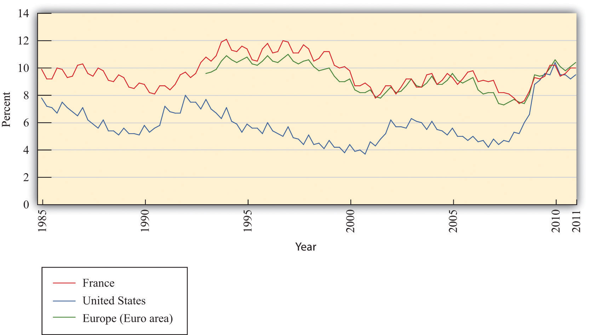
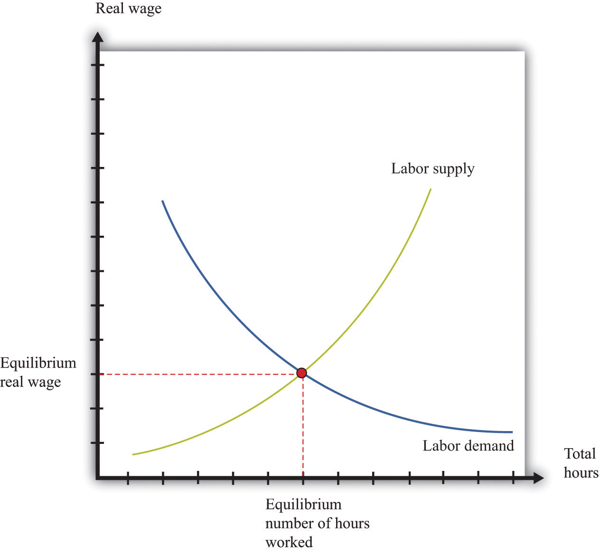
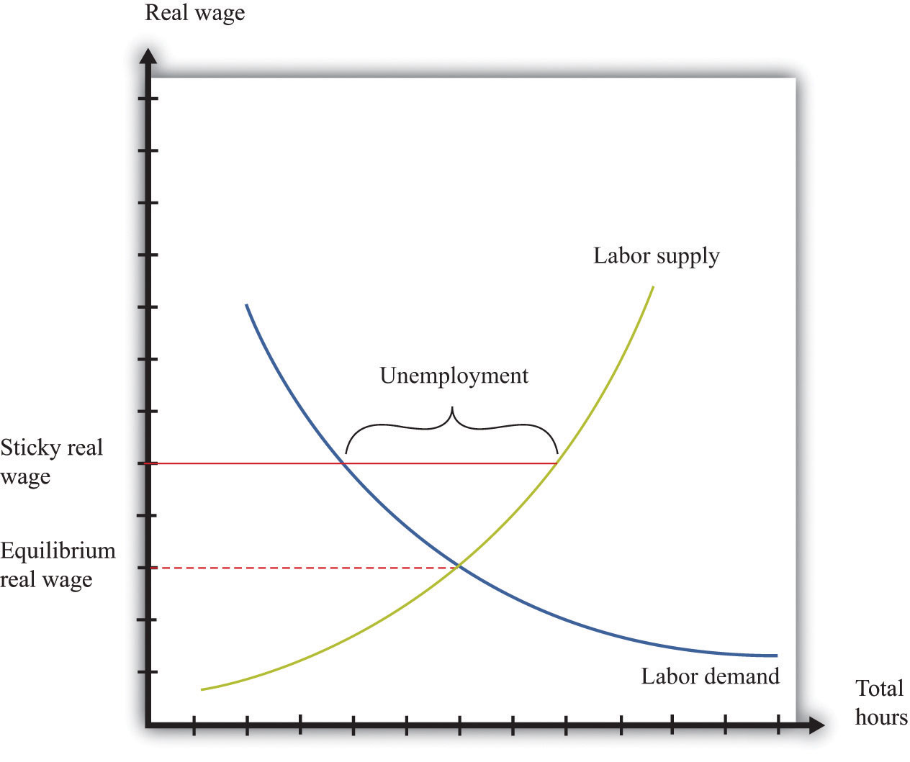
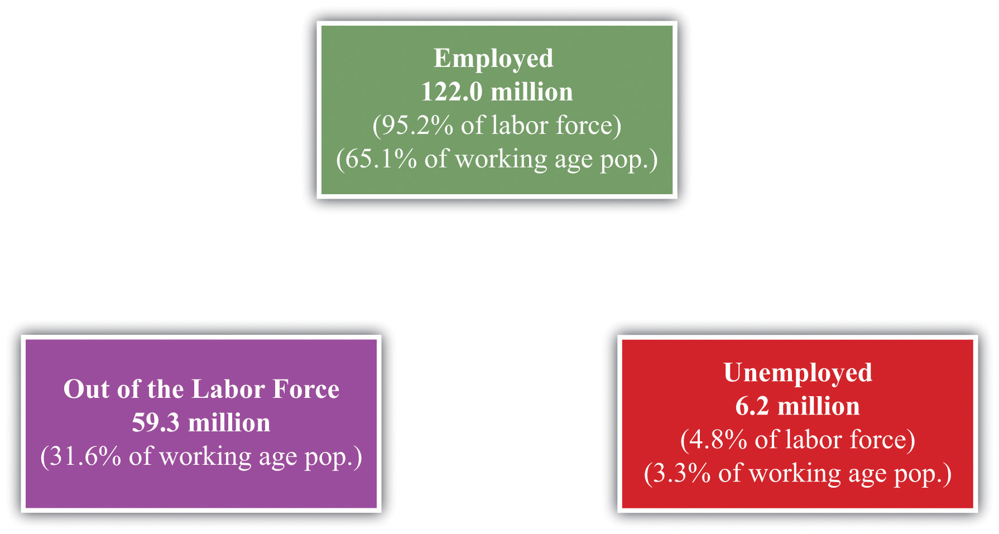
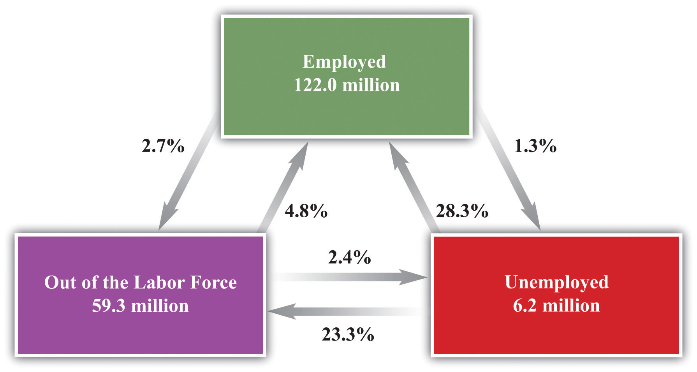

In March 2006, students demonstrated on the streets of France.
Police detained some 300 people around France after nationwide student marches against a new labor law turned violent, as street cleaners cleared away torched cars Friday and the government braced for more protests.
A quarter of a million people took to the streets in some 200 demonstrations around the country Thursday, in a test of strength between youth and the conservative government of 73-year-old President Jacques Chirac.
Most of the violence—and the arrests—were around the Sorbonne University in Paris, where police fired rubber pellets and tear gas at youths who pelted them with stones and set cars on fire.
[…]
Many trade unionists and students oppose the new youth employment law because it allows new workers under the age of 26 to be dismissed within a two-year trial period.“Violent French Protests: 300 Held,” VOV News, March 18, 2006, accessed August 22, 2011, http://english.vov.vn/Home/Violent-French-protests-300-held/20063/36835.vov.
If, like most readers of this book, you are a student in the United States, it is unlikely that you have taken part in violent demonstrations about labor policy. It is not that such demonstrations are unheard of. In Madison, Wisconsin, in 2011, there were extended protests concerning proposed changes in public sector contracts. Still, in the United States, it is accepted that the government has a limited influence on contracts between workers and firms. It is part of economic life in the United States that employment is not protected by the government. In Europe, however, many countries have extensive laws on their books that are designed to protect workers. For example, in much of Europe, unemployment insurance is more generous than in the United States. Unemployed people obtain larger benefits and are eligible for these benefits for longer periods of time.
In many European countries, it is also much more difficult to fire workers than it is in the United States. The proposed new job contract that led to the demonstrations in France was intended to reduce the nearly 25 percent unemployment rate of the French youth. Perhaps paradoxically, the contract was designed to make it easier to make young people unemployed. The logic was that firms would be willing to hire more workers if the costs of firing them were lower.
The different systems in the United States and Europe each have their defenders. Supporters of European labor laws point to the greater job security enjoyed by workers in Europe. Supporters of the US system argue that the United States enjoys greater flexibility in the labor market, leading to a more efficient economy with less unemployment. Some feel that the United States should adopt European-style labor protection measures; others feel that Europe would benefit from becoming more like the United States.
In this chapter, we look at the different experiences of Europe and the United States in order to evaluate these different approaches to the labor market. In the end, we want to be able to answer—or at least form intelligent opinions about—the following question:
What are the results of the different labor market policies in the United States and Europe?
This is not just an academic question for discussion in a textbook. In both the United States and Europe, labor market policy is frequently debated. The US Congress has considered various labor policies, such as restrictions on plant closing to protect jobs, requirements that firms offer workers health insurance, requirements that firms include paid sick days in employment contracts, and so on. At the same time, there is considerable discussion in Germany, France, and elsewhere in Europe about the possible benefits of increased labor market flexibility.
Employment and unemployment are ideas that most of us are familiar with. You may well have already been employed, at least in a part-time capacity, at some point in your life. It is also possible that you have been unemployed, meaning that you were without a job, but were actively seeking work. Our personal experiences, and those of our parents and friends, help us understand the basics of employment and unemployment.
Even if you have not yet been employed, you will begin searching for a job once you graduate with a college degree. As you surely know, finding a good job is not always easy. You want to find a job that you enjoy, fits your skills, and pays well. It is also not easy for prospective employers: they want to find someone who is suitably skilled, will work well within the firm, and is not too expensive. The challenge is to match workers and jobs: the worker needs to be suited to the job, and the job needs to be suited to the worker.
The process of matching does not happen just once. As time passes, your skills, ambitions, and choice of occupation may change. As time passes, your employer’s needs change. You may wish to move to another city. Your employer may want to move your job to another city. Most people do not spend their entire lives in one job.
A schematic representation of this process is shown in Figure 23.1 "Employment Transitions over Your Lifetime". Here you leave college and look for a job. Finding that job is likely to be time-consuming. You will have to contact lots of prospective employers, read newspaper ads, use search engines on the Internet, and, of course, show up for interviews. In the end, you will find your first job and begin your career.
Figure 23.1 Employment Transitions over Your Lifetime

You might stick with this job for a while, but in all likelihood the match between you and your employer will come to an end sooner or later. You may leave the job through your own choice because you are no longer happy with it. Alternatively, you may be forced to leave because your employer no longer has need of you. You then search for another job. When you succeed in finding a new position where your needs and desires align with those of another employer, a new match is formed.
Fifty years or so ago, people often joined companies and stayed with them for life, but this is very unusual today. You are likely to move between jobs several times during your lifetime before your eventual retirement. Sometimes you may be able to move from one job to another without interruption. At other times you will be unemployed between jobs. Throughout your life, you are likely to face periods of anxiety and stress because of the employment uncertainties that you confront:
This discussion makes it clear that we cannot analyze labor market policies without understanding the movements in and out of employment and unemployment. But before we can do so, we need to make sure we understand exactly what unemployment is, and what causes it. Thus we begin by carefully defining unemployment.In part, this is a review of material in Chapter 18 "The State of the Economy". There, we explained that the unemployment rate is one possible indicator of the overall health of the economy. We look at the data for Europe and the United States and make sense of this data using economic reasoning. We then turn to an analysis of the matching between workers and jobs and the decisions of individual workers in this process. All this analysis gives us a better understanding of unemployment and, more generally, the operation of labor markets. We conclude by evaluating labor market policies in the United States and Europe.
After you have read this section, you should be able to answer the following questions:
We begin by discussing the most commonly watched indicator of the state of the labor market: the unemployment rate. In the United States, the unemployment rate is measured by the Bureau of Labor Statistics (BLS; http://www.bls.gov/cps/home.htm). The BLS looks at the population of individuals of working age who are not in the military. It sorts such people into three separate categories:
Thus
civilian working age population = number employed + number unemployed+ number out of the labor force.Those out of the labor force include students, stay-at-home parents, those who are prevented from working by disability, and people who have taken early retirement. The category also includes discouraged workersSomeone who would like a job but who has stopped searching and is therefore classified as out of the labor force rather than unemployed., those who are deemed to have dropped out of the labor force because they have stopped looking for a job.
The civilian labor forceThe sum of employed and unemployed individuals. comprises the employed and the unemployed. The unemployment rateThe number of unemployed individuals divided by the sum of the number employed and the number unemployed. is calculated as follows:
and the employment rateThe number of employed divided by the civilian labor force. is calculated as follows:
In the United States, the definition of “employed” is fairly liberal. To be classified as employed, it is sufficient to have done any work for pay or profit in the previous week. People may even be counted as employed if they did not work during the week—for example, if they were on vacation, out sick, on maternity/paternity leave, or unable to work because of bad weather.
In this chapter, we explore differences in unemployment in the United States and Europe. To do this properly, we need to take care that unemployment is measured in a similar way within the sample of countries. The European Commission defines as unemployed those aged 15 to 74
As in the United States, the unemployment rate is the number of people unemployed as a percentage of the labor force, and the labor force is the total number of people employed and unemployed.
The European Commission defines as employed those aged 15 to 74
These descriptions reveal that the definitions used in Europe are broadly similar to those in the United States, meaning that we can legitimately compare employment and unemployment rates in the two regions.
National and local governments help people cope with the risk that they might lose their jobs. In the United States and many other countries, unemployed people are typically eligible to receive payments from the government, called unemployment insuranceA payment made by the government to those who are unemployed., for some period of time after losing their jobs. Some governments help the unemployed find jobs and may even provide financial support to help people retrain and obtain marketable skills.
Figure 23.2 "Unemployment Rates in France, the United States, and the Euro Area, 1985-2011" shows quarterly unemployment rates for the United States, France, and Europe as a whole. In the late 1980s, unemployment fell in both the United States and France, although the US unemployment rate was about two percentage points lower than the French rate. The 1990s were a different story. Unemployment rates increased in both countries at the beginning of the decade. Thereafter, the unemployment rate decreased in the United States, but it continued to increase in France for about half of the decade and decreased only near the end of century. From the early 1990s up to about 2008, the unemployment rate in Europe was substantially higher than that in the United States. The pattern for Europe as a whole closely matches the pattern for France, although unemployment in France is typically a little higher than the European average.
The crisis of 2008, however, led to a dramatic rise in the unemployment rate in the United States. At the end of 2007, the US unemployment rate was just under 5 percent. Two years later, at the start of 2010, the rate was over 10 percent. Unemployment also rose in Europe, but to nothing like the same degree. In early 2011, US and European unemployment rates were almost identical.
One other feature of the data is noticeable: there is a regular seasonal pattern in the data. For example, in the United States, unemployment is almost always higher in the first quarter of the year than it is in the preceding or following quarter. This is because some sectors of the economy are heavily affected by seasonal patterns. For example, stores may hire extra people during the Christmas holiday period, while construction firms may employ fewer people during the winter months. Sometimes, data such as these are “seasonally adjusted” to remove these effects.
Figure 23.2 Unemployment Rates in France, the United States, and the Euro Area, 1985-2011
Source: OECD, “Statistics Portal: Labour,” http://www.oecd.org/topicstatsportal/0,2647,en_2825_495670_1_1_1_1_1,00.html#499797.
The French labor law reforms with which we began the chapter were aimed at young workers, so let us also look specifically at the unemployment experience of this group. Between 2000 and 2010, the unemployment rate in France for the age group 20–24 ranged between 17 and 21 percent, with an average of 18.6 percent. In the United States, in contrast, for the same period and the same group of workers, the unemployment rate averaged 10 percent.The figures on youth unemployment come from “Statistics Portal: Labour,” OECD, http://www.oecd.org/topicstatsportal/0,2647,en_2825_495670_1_1_1_1_1,00.html#499797. In both countries, the unemployment rate is higher for younger workers than the overall unemployment rate.
Although there are some similarities between France and the United States, there is also a clear puzzle: unemployment, for both the overall population and young workers, was, until very recently, much higher in France. We need to understand the source of this difference before we can evaluate different policy remedies.
Unemployment suggests a mismatch between supply and demand. People who are unemployed want to have a job but are unable to find one. In economic language, they are willing to supply labor but cannot find a firm that demands their labor. The most natural starting point for an economic analysis of unemployment is therefore the labor marketThe market that brings together households who supply labor services and firms who demand labor as an input into the production process..
Toolkit: Section 31.3 "The Labor Market"
The labor market brings together the supply of labor by households and the demand for labor by firms. You can review the labor market in the toolkit.
Figure 23.3 Labor Market
The labor market is depicted in Figure 23.3 "Labor Market". “Price” on the vertical axis is the real wageThe nominal wage (the wage in dollars) divided by the price level., which is the nominal wage divided by the price level. It tells us how much you can obtain in terms of real goods and services if you sell an hour of your time. Recalling that the price level can be thought of as the price of a unit of the real gross domestic product (real GDP), you can equivalently think of the real wage as the value of your time measured in units of real GDP.
At a higher real wage, households supply more labor. There are two reasons for this. First, a higher real wage means that, for the sacrifice of an hour of time, households can obtain more goods and services than before. Households are therefore induced to substitute away from leisure to work and ultimately consume more. Second, as the wage increases, more individuals join the labor force and find a job. Embedded in the upward-sloping labor supply curve is both an increase in hours worked by each employed worker and an increase in the number of employed workers.
At a higher real wage, firms demand fewer labor hours. A higher real wage means that labor time is more expensive than before, so each individual firm demands less labor and produces less output. The point where the labor supply and demand curves meet is the equilibrium in the labor market. At the equilibrium real wage, the number of hours that workers choose to work exactly matches the number of hours that firms choose to hire.
Supply and demand in the labor market determine the real wage and the level of employment. Variations in either labor supply or labor demand show up as shifts in the curves. If we want to talk about unemployment, however, the labor market diagram presents us with a problem. The idea of a market is that the price adjusts to reach equilibriumAn equilibrium price and an equilibrium quantity such that the quantity supplied equals the quantity demanded at the equilibrium price.—the point where supply equals demand. In the labor market, this means the real wage should adjust to its equilibrium value so that there is no mismatch of supply and demand. Everyone who wants to supply labor at the equilibrium wage finds that their labor is demanded—in other words, everyone who is looking for a job is able to find one.
Remember the definition of unemployment: it is people who are not working but who are looking for a job. The supply-and-demand framework has the implication that there should be no unemployment at all. Everyone who wants to work is employed; the only people without jobs are those who do not want to work.
So where do we go from here? One natural approach is to start from Figure 23.3 "Labor Market" but look for circumstances in which we would see unemployment. Figure 23.4 "Unemployment in the Labor Market" shows us that there will be unemployment if the real wage in the market is too high—that is, above the equilibrium real wage. In this case, the amount of labor that workers want to sell is greater than the amount that firms want to buy. Some workers will want a job at this wage but be unable to find one. They will be unemployed.
Figure 23.4 Unemployment in the Labor Market
If the real wage is sticky, it may be higher than the equilibrium real wage, meaning that some workers who want to work are unable to find a job.
Figure 23.4 "Unemployment in the Labor Market" shows us what the labor market must look like for there to be unemployment, but it is hardly an explanation of unemployment. Economists typically expect markets to look like Figure 23.3 "Labor Market", not Figure 23.4 "Unemployment in the Labor Market". That is, they think that the price in a market—in this case, the real wage—adjusts quickly to ensure that supply equals demand. If we want to explain unemployment with a picture like Figure 23.4 "Unemployment in the Labor Market", we also need some story of why real wages might be sticky, so they remain above the equilibrium wage.
Over the years, economists have offered several stories about why wages might be inflexible.
Both of these stories are really explanations of why nominal wagesThe wage in dollars paid to workers per unit of time. may be unable to adjust. Figure 23.4 "Unemployment in the Labor Market" has the real wage on the axis. Remember that the real wage is calculated as follows:
Minimum wage laws specify a fixed minimum nominal wage. Even if the nominal wage is fixed, the real wage decreases when the price levelA measure of average prices in the economy. increases. It follows that rigidities in the nominal wage translate into rigidities in the real wage only if the price level is also sticky.
Prices in an economy may indeed be sticky in the short run, so sticky wages and prices do provide one explanation for short periods of unemployment. Such unemployment is sometimes called cyclical unemploymentThe component of unemployment that depends on the business cycle.. In the long run, however, we would expect the labor market to return to an equilibrium with zero unemployment. Cyclical unemployment is the component of unemployment that depends on the business cycle. During a recession, cyclical unemployment is relatively high. In periods of economic expansion, cyclical unemployment is low or nonexistent. But we always observe some unemployment, which tells us that sticky nominal wages and prices cannot be the whole story.
Figure 23.4 "Unemployment in the Labor Market" tells us that the only way to get persistent unemployment in this framework is for the real wage to be permanently above the equilibrium wage. We need to find some reason why market forces will not cause the real wage to adjust to the point where demand equals supply.
One possible story introduces labor unions into the picture. Unions give some market power to workers. Just as we sometimes think about firms having market power, meaning that they have some control over the prices that they set, so we can think about a union having some control over the wage that workers are paid. If there were just a single union representing all workers, then it could choose the real wage, much as monopoly firms choose their price. Firms would then hire as many hours as they wanted at that wage. Generally, unionized workers are paid more than the wage at which supply equals demand, just as in Figure 23.4 "Unemployment in the Labor Market". The union accepts some unemployment but believes that the higher wage more than compensates. A problem with this story is that, like the minimum wage, it is relevant only for a relatively small number of workers. In the United States in particular, only a small fraction of the workforce is unionized.
Another story goes by the name of efficiency wagesWages in excess of the equilibrium real wage that are paid by firms to provide incentives for their workers to perform their duties.. The idea here is that firms have an incentive to pay a wage above the equilibrium. Workers who are paid higher wages may feel better about their jobs and be more motivated to work hard. Firms may also find it easier to recruit good workers when they pay well and find it easier to keep the workers that they already have. The extra productivity and lower hiring and firing costs may more than compensate the firm for the higher wage that it is paying.
So far, we have come up with four possible stories about unemployment. Can these theories help to explain differences between Europe and the United States?
First, it is generally the case that minimum wages are more generous in Europe than in the United States, so it is certainly possible that higher minimum wages in Europe contribute to higher levels of unemployment there. Second, there is some evidence that nominal wages are in some sense “stickier” in Europe than in the United States. Third, we can observe that unions are generally more prevalent and more powerful in Europe than in the United States. Thus some of the stories that we have told are potentially helpful in explaining differences between the United States and Europe.
However, all these theories are silent about the underlying movement of workers from employment to unemployment and back again. Figure 23.4 "Unemployment in the Labor Market" paints a static picture of a world that is in fact dynamic and fluid. There is no means in the framework to explore the role of unemployment insurance and other policies that differ across Europe and the United States. In addition, market forces may work differently in the labor market. In Figure 23.4 "Unemployment in the Labor Market", there are more workers wanting to work than there are jobs offered by firms. The standard story of market adjustment is that workers willing to work for a lower wage would approach a firm, offer to undercut the wage of an existing worker, and be immediately hired as a replacement. This is not how hiring and firing usually works in the labor market. Firms have a relationship with their existing workers; they know if their workers are competent, hardworking, and reliable. Firms will not readily replace them with unknown quantities, even for a lower wage.
For these reasons, researchers in labor economics think that Figure 23.4 "Unemployment in the Labor Market" is too simple a framework to explain the realities of modern labor markets. Instead, they frequently turn to a different framework more suited to thinking about labor market flows.
After you have read this section, you should be able to answer the following questions:
The labor market is a highly dynamic place. Workers are constantly moving from job to job, in and out of the workforce, or from employment to unemployment and vice versa. Large firms devote substantial resources to human resource management in general and hiring and firing in particular. By contrast, Figure 23.4 "Unemployment in the Labor Market" is static because it shows the labor market at a moment in time. Our understanding of the labor market—and, by extension, employment and unemployment—is badly incomplete unless we look more carefully at the movement of workers. Further, when workers and firms meet, they do not take as given a market wage but instead typically engage in some form of bargaining over the terms of employment.
This vision of a dynamic labor market with bargaining is much closer to the reality of labor relations than is the model of labor supply and demand. To better understand the determinants of employment and unemployment, we therefore turn to labor market flows. We begin with some more facts, again contrasting the experience of Europe with that of the United States, and then develop a framework that allows us to think explicitly about the dynamic labor market.
Our starting point is the classification of individuals in the civilian working age population. Recall that economic statistics place them as one of the following: employed, unemployed, or not in the labor force. Imagine taking a snapshot of the US economy each month. For a given month, you would be able to count the number of people employed, unemployed, and out of the labor force. We could call these the stocks of each kind of individual.
Figure 23.5 Worker Stocks in the United States
Figure 23.5 "Worker Stocks in the United States" shows the number of people between 16 and 64 years old in the United States in three different “states”—employment, unemployment, and out of the labor force—over the period 1996–2003.These data come from a study using a monthly survey conducted by the Bureau of Labor Statistics (BLS) called the Current Population Survey and were compiled by Stephen J. Davis, R. Jason Faberman, and John Haltiwanger. The numbers here come from S. Davis, R. J. Faberman, and J. Haltiwanger, “The Flow Approach to Labor Market: New Data Sources and Micro-Macro Links” NBER Working Paper #12167, April 2006, accessed June 30, 2011, http://www.nber.org/papers/w12167. On average, there were 122 million people employed, 6.2 million unemployed, and 59.3 million considered out of the labor force. Adding these numbers together, there were 187.5 million working-age individuals, of whom 128.2 million were in the labor force. The average unemployment rate was 4.8 percent over this period, and the employment rate was 95.2 percent. Notice, though, that many individuals are out of the labor force: only 65 percent of the population is employed.
Figure 23.5 "Worker Stocks in the United States" shows an average over many months, but you could also look at how these numbers change from month to month. Even more informatively, you could count the number of people who were employed in two consecutive months. This would tell you the likelihood of being employed two months in a row. These calculations for the US economy are summarized in Figure 23.6 "Worker Flows in the United States".
Look, for example, at the arrows associated with the box labeled unemployed. There are two arrows coming in: one from the employed box and one from the out-of-the-labor-force box. There are two arrows going out: one to the employed box and one to the out-of-the-labor-force box. Each of these four arrows has a percentage attached, indicating the fraction of people going from one box to another. Thus, on average, 28.3 percent of the unemployed people in one month are employed in the next and 23.3 percent leave the labor force. The remaining 48.4 percent stay in the group of unemployed.
The numbers in the figure are averages over a long period. Such flows change over the course of the year due to seasonal effects. Around Christmas, for example, it may be easier for an unemployed worker to find a job selling merchandise in a retail shop. These flows also change depending on the ups and downs of the aggregate economy.
Figure 23.6 Worker Flows in the United States
Do European countries exhibit similar patterns? Portugal makes for a good comparison with the United States because the unemployment rates in the two countries were broadly similar over most of the last two decades. Yet Portugal has very strong employment protection laws, to the point where they are enshrined in the Portuguese Constitution:“Article 53,” Portugal-Constitution, adopted April 2, 1976, accessed June 30, 2011, http://www.servat.unibe.ch/icl/po00000_.html#A053_.
The right of workers to job security is safeguarded. Dismissals without just cause or for political or ideological reasons are forbidden.
A study that compared the labor markets in Portugal and the United States uncovered the following facts:See Olivier Blanchard and Pedro Portugal, “What Hides Behind an Unemployment Rate: Comparing Portuguese and U.S. Labor Markets,” American Economic Review 91, no. 1, (2001), 187–207.
Even though Portugal and the United States have similar overall unemployment rates, the underlying flows are quite different in the two countries. Flows between employment and unemployment—and vice versa—are much smaller in Portugal. This means that if you lose your job, it is likely to take a long time to find a new one. If you have a job, you are likely to keep it for a long time. As we would expect from this, people typically spend much longer periods of time in unemployment in Portugal than they do in the United States.
If we compare the United States with Europe more generally, we see similar patterns. In 2010, the average unemployment durationThe amount of time a typical worker spends searching for a new job. for workers ages 15–24 was about 10.6 months in Europe but only 5.9 months for the United States. For workers in the 25–54 age group, the duration was higher in both Europe (13.7 months) and the United States (8.2 months) than for younger workers.See “Unemployment Duration,” Online OECD Employment database, accessed June 30, 2011, http://www.oecd.org/document/34/0,3746,en_2649_33927_40917154_1_1_1_1,00.html#uduration. Recall that in 2010, Europe and the United States had similar rates of unemployment. Employment duration, however, is still much higher in Europe than the United States. In both places, older workers tend to be unemployed for longer periods than younger workers. But European workers are typically unemployed for much longer periods of time than US workers.These figures come from “Average Duration of Unemployment,” OECD, accessed June 30, 2011, http://stats.oecd.org/Index.aspx?DataSetCode=AVD_DUR.
The Organisation for Economic Co-operation and Development (OECD) conducted a large study on the employment protection legislation in a variety of developed countries. The main study (OECD Employment Outlook for 2004, http://www.oecd.org/document/62/0,3746,en_2649_33927_31935102 _1_1_1_1,00.html) created a measure of employment protection and then attempted to relate it to labor market outcomes in different countries. The reasoning we have just presented suggests that in countries with relatively high levels of employment protection, labor markets would be much more sluggish.
Formulating a comprehensive measure of employment protection is not easy. In principle, the idea is to measure the costs of firing workers and various regulations of employment. Examples would include requirements on advance notice of layoffs and the size of severance payments that firms are obliged to pay. In some countries, a firm must go to court to lay off workers. For temporary workers, there are specific restrictions placed on this form of contract, as in the discussion of France that opened this chapter. In reality, these costs are difficult to detect and convert to a single measure. The OECD findings should be interpreted with these challenges in mind.
Another OECD publication (http://www.oecd.org/dataoecd/40/56/36014946.pdf) examines employment protection legislation across OECD countries in 1998 and 2003.This discussion is based on Figure A.6 of OECD, “Annex A: Structural Policy Indicators,” Economic Policy Reforms: Going for Growth, accessed June 30, 2011, http://www.oecd.org/dataoecd/40/56/36014946.pdf. Portugal was the country with the highest level of employment protection legislation, while the United States was the lowest. France was above average, while the United Kingdom and Canada were below average. The OECD analysis highlighted two effects of such legislation on labor market flows:
The first effect is the more obvious one; indeed, it provides the rationale for employment protection. If it is hard to fire workers, then firms are less likely to do so. The second effect is less obvious and more pernicious. If it is hard to fire workers, then firms become more reluctant to hire workers. Put yourself in the place of a manager wondering whether to make a hire. One concern is that the person you are considering will turn out to be unsuitable, or a bad worker. Another is that conditions in your industry will worsen, so you may not need as many employees. In those circumstances, you want to be able to let the worker go. If you will not be able to do so, you may decide it is safer simply to make do with the workers you already have.
The OECD analysis particularly stressed the effects on the labor market experience of relatively young workers. The report emphasized that stronger legislation is linked to lower employment of young workers. If it is costly to sever a relationship, then a firm will not give a young worker a chance in a new job. The OECD also noted an important benefit of employment protection legislation: it enhances the willingness of young workers to invest in skills that are productive at their firms. Without a strong attachment to the firm, workers have little incentive to build up skills that are not transferable to other jobs.
In place of the supply-and-demand diagram, we can think about the decisions that workers and firms make when they are trying to form or break an employment relationship. Individual workers search for available jobs, which are called vacancies. On the other side, vacancies are searching for workers. When a vacancy and a worker are successfully matched, a job is created. When we say that a vacancy is searching for a worker, we, of course, really mean that a firm with a vacancy is seeking to hire a worker. You can think of a firm as being a collection of jobs and vacancies.
Whereas the standard supply-and-demand picture downplays differences among workers and jobs, this “search-and-matching” approach places these differences at the center of the analysis. Workers differ in terms of their abilities and preferences. Jobs differ in terms of their characteristics and requirements. For an economy to function well, we need to somehow do a good job of matching vacancies with workers. When a successful match occurs, we call this “job creation.”
Search theoryA framework for understanding the flows of workers across periods of employment and unemployment along with the creation of job vacancies by firms. is a framework for understanding this matching process. Let us think about how this process looks, first from the perspective of the worker and then from the perspective of the firm. Workers care about the various characteristics of their jobs. These characteristics might include how much the job pays, whether it is in a good location, whether it offers good opportunities for advancement, whether it is interesting, whether it is dangerous, and other attributes.
Vacancies are likewise “looking” for certain characteristics of workers, such as how much they cost, what skills they possess, whether they have relevant experience, whether they are hardworking and motivated, whether they are trustworthy, and so on. The firm cares about these characteristics because it cares about profitability: its goal is to make as much profit as possible.
Over time, the quality of the match between a worker and a vacancy may change. A job may become less profitable to the firm and/or less attractive to the worker. To put it another way, the amount of value created by the job may change. The worker may come to dislike particular aspects of the job or may wish to change location for family reasons. The worker may feel that he or she would be better matched with some other firm, perhaps because of changes in his or her skills and experience. From the firm’s side, demand for the firm’s product may decrease, or the firm might shift to a new production technique that requires different skills. If the value created by a job decreases too much, then the firm or the worker may choose to end the relationship, either by the worker’s choice (quitting the job) or the firm’s (firing the worker). This is “job destruction.”
Jobs are created and destroyed all the time in the economy. The flows of workers among jobs and employment states are a key characteristic of the labor market. As these flows occur, workers often spend time unemployed. After a job is destroyed, the worker may spend some time unemployed until he or she finds a job with a different firm.
In a rapidly changing economy, the value of different jobs (worker-firm matches) changes over time. To function efficiently, the labor market needs to be able to accommodate such changes. For this discussion, we will think about efficiency as simply being measured by the productivity of the match between workers and firms. In an efficient match, the worker is productive at the chosen job. For the overall economy, if all matches are efficient, then it is not possible to change the assignment of workers to jobs and produce more output.
Let us see how this works in a simple example. Table 23.1 "Output Level per Day in Different Jobs" gives an example of an economy with two workers and two jobs. Each entry in the table is the amount of output that a particular worker can produce in each job in one day. For example, worker B can produce 4 units of output in job 2 and 8 units of output in job 1.
Table 23.1 Output Level per Day in Different Jobs
| Worker | Job 1 | Job 2 |
|---|---|---|
| A | 9 | 6 |
| B | 8 | 4 |
Before we begin, let us pause for a moment to think about this kind of example. This chapter is motivated by the desire to explain the employment and unemployment experiences of hundreds of millions of workers in the United States and Europe. It may seem ridiculous to think that a story like this—with two workers, two jobs, and some made-up numbers—can tell us anything about employment and unemployment across two continents. Economists often refer to such stories as “toy” models, in explicit recognition of their simplicity. This kind of model is not designed to tell us anything specific about US or European unemployment. The point of this kind of model is to keep our thinking clear. If we cannot understand the workings of a story like this, then we cannot hope to understand the infinitely more complicated real world. At the same time, if we do understand this story, then we begin to get a feel for the forces that operate in the real world.
If we were in charge of this economy, how would we allocate the workers across the jobs? In this case, the answer is easy to determine. If we assign worker A to job 1 and worker B to job 2, then the economy will produce 13 units of output per day. If we assign worker A to job 2 and worker B to job 1, then the economy will produce 14 units of output per day. This is the better option because—in the interest of efficiency—we would like the workers to be assigned to the jobs they do best.
Notice, by the way, that worker A is better than worker B at both jobs. However, worker A is a lot better at job 2 (50 percent more productive) and only a little better at job 1 (12.5 percent more productive). The best assignment of workers is an application of the idea called comparative advantage: each worker does the job at which he or she does best when compared to the other person.
Comparative advantageIn the production of one good, the opportunity cost, as measured by the lost output of the other good, is lower for that person than for another person. and absolute advantageIn the production of a good, one person can produce more of a good in a unit of time than another person. are used to compare the productivity of people (countries) in the production of a good or a service. We introduce this tool here assuming there are two people and two goods that they can each produce.
Toolkit: Section 31.13 "Comparative Advantage"
A person has an absolute advantage in the production of a good if that person can produce more of that good in a unit of time than another person can. A person has a comparative advantage in the production of one good if the opportunity cost, measured by the lost output of the other good, is lower for that person than for another.
In our example, worker A has a comparative advantage in job 2, and worker B has a comparative advantage in job 1. We have defined comparative advantage in terms of opportunity costWhat you must give up to carry out an action., so let us go through this carefully and make sure it is clear. The opportunity cost of assigning a worker to one job is the amount of output the worker could have produced in the other job.
We can measure opportunity cost in terms of the output lost from assigning a worker to job 2 instead of job 1. The opportunity cost of assigning worker A to job 2 rather than job 1 is 3 units (9 − 6). The opportunity cost of assigning worker B to job 2 rather than job 1 is 4 units of output (8 − 4). The opportunity cost is higher for worker B, which is another way of saying that worker B has a comparative advantage in job 1. Worker B should be assigned to job 1, and worker A should take on job 2.
We could equally have measured opportunity cost the other way around: as the output lost from assigning a worker to job 1 rather than job 2. The opportunity cost of assigning worker A to job 1 rather than job 2 is −3 units (6 − 9). The opportunity cost of assigning worker A to job 1 rather than job 2 is less, it is −4 units of output (4 − 8). Worker A has the higher opportunity cost (−3 is greater than −4), so we again conclude that worker A should be assigned to job 2.
Suppose that this simple economy is indeed operating efficiently, with worker A in job 2 and worker B in job 1. Then imagine that the productivity of one of these matches changes. For example, suppose that at some point worker B goes on a training course for job 2, so Table 23.1 "Output Level per Day in Different Jobs" becomes Table 23.2 "Revised Output Level per Hour from Assigning Jobs".
Table 23.2 Revised Output Level per Hour from Assigning Jobs
| Worker | Job 1 | Job 2 |
|---|---|---|
| A | 9 | 6 |
| B | 8 | 7 |
If you compare these two tables, you can see that worker B is now more productive than worker A in job 2. Worker A is still better at job 1, as before.
If we want to produce the maximum amount of output in this economy, we now want to switch the workers around: if worker A does job 1 and worker B does job 2, then the economy can produce 16 units of output per day instead of 14.
How might this change happen in practice? Here are three scenarios.
Frictional unemployment. This scenario lies between these two extremes: workers and firms adjust but not instantaneously. How might workers A and B exchange jobs? One possibility is that worker A is fired from job 2 because the firm wants to attract worker B to the job instead. At the same time, worker B might quit in the hope of getting job 1 when it is vacant. Both workers move from employment into unemployment, as in the arrow from employment to unemployment in Figure 23.6 "Worker Flows in the United States".
During the time when workers A and B are unemployed, their production is reduced to zero. So, during the period of adjustment, the economy in the third scenario undergoes a recession. But once adjustments are made, the economy is much more productive than before. Economists refer to the unemployment that occurs when workers are moving between jobs as frictional unemploymentThe unemployment that occurs when workers are moving between jobs..
How do these three scenarios compare? It is evident that fluid labor markets are the ideal scenario. In this situation, there is no lost output due to unemployment, and the economy is always operating in the most efficient manner. The choice between the second and third scenarios is not so clear-cut. In the second scenario, there is no loss of output from unemployment, but the assignment of workers to jobs is not efficient. In the third scenario, the economy eventually gets back to the most efficient assignment of jobs, but at the cost of some lost output and unemployment (and, in the real world, various other costs of transition incurred by workers and firms).
You can think of the time spent in unemployment in the second scenario as a type of investment. The economy forgoes some output in the short run to enjoy a more efficient match of workers and firms in the long run. As with any investment decision, we decide if it is worthwhile by comparing the immediate cost (the first four weeks of lost output) with the discounted present value of the future flow of benefits. Discounted present value is a technique that allows us to add together the value of dollars received at different times.
Toolkit: Section 31.5 "Discounted Present Value"
Discounted present value is a technique for adding together flows at different times. If you are interested in more detail, review the toolkit.
Suppose, for example, that it takes four weeks for the economy to reallocate the jobs in the third scenario. Assuming the workweek has 5 working days, the economy produces 0 output instead of 14 units of output for a total of 20 days. The total amount of lost output is 20 × 14 = 280. Once the workers have found their new jobs, the economy produces 10 more units per week than previously. After 28 weeks, this extra output equals the 280 lost units. If we could just add together output this month and output next month, we could conclude that this investment pays off for the economy after 28 weeks. Because output produced in the future is worth less than output today, it will actually take a bit longer than 28 weeks for the investment to be worthwhile.
Provided that changes to the relative productivity of workers do not occur too frequently, the costs of adjusting the assignment of workers to jobs (the spells of unemployment) will be more than offset by the extra output obtained by putting workers into the right jobs. This is the gain from a fluid labor market, even though the process entails spells of unemployment.
We observed earlier that the unemployment rate for young workers is higher than for older workers, in both France and the United States. We can understand why by thinking about the search and matching process.
When lawyers, doctors, professors, and other professionals change jobs, they typically do so with little or no intervening unemployment. Search and matching is easy because they have visible records, meaning their productivity at a particular job is relatively easy to figure out. In general, the longer someone has been in the workforce, the more information is available to potential new employers. Also, experienced workers have a good understanding of the kinds of job that they like.
Just the opposite is more likely in the labor market for young workers. Firms know relatively little about the young workers they hire. Likewise, young workers, with little employment experience, are likely to be very uncertain about whether or not they will like a new job. The result, at least in the United States, is a lot of turnover for young workers. Young workers sample different jobs in the labor market until they find one suited to their tastes and talents. They take advantage of the fluid nature of the US labor market to search for a good match. The gain is a better fit once they find a job they like. The cost is occasional spells of unemployment.
In Europe, search and matching is much harder. Some young workers are even effectively guaranteed jobs for life by the government from the moment they finish college. By contrast, young workers without jobs find it difficult to obtain employment. Given the lack of fluidity in European labor markets, it is surprising neither that more young workers are unemployed, nor that they stay unemployed for longer periods of time.
We expect there to be some frictional unemployment, even in a well-functioning economy. We also know that there is cyclical employment associated with the ups and downs of the business cycle. When cyclical unemployment is zero, we say that the economy is operating at full employment. The natural rate of unemploymentThe amount of unemployment we expect in an economy that is operating at full employment. is defined as the amount of unemployment we expect in an economy that is operating at full employment—that is, it is the level of unemployment that we expect once we have removed cyclical considerations.
The natural rate of unemployment can seem like an odd concept because it says that it is normal to have unemployment even when the economy is booming. But it makes sense because all economies experience some frictional unemployment as a result of the ongoing process of matching workers with jobs. Government policies that affect the flows in and out of employment lead to changes in the natural rate of unemployment.
After you have read this section, you should be able to answer the following questions:
The total number of hours worked in an economy depends on both the number of people who are employed and the number of hours worked by each employed person. So far, we have said little or nothing about this second issue. But another significant difference between Europe and the United States is that people work less in Europe than in the United States. If you hear such a statement, perhaps on the radio, you might have some questions about this comparison.
Such questions simply mean that we had better be sure that we get our facts straight. We do this in the next part of this chapter. After that, we again turn to some theory to understand what is going on.Discussions of this topic by academics have been prompted by the work of Nobel Prize–winning economist Edward C. Prescott. The following article provides an overview and analysis of the key issues: Edward S. Prescott, “Why Do Americans Work So Much More Than Europeans?” Federal Reserve Bank of Minneapolis Quarterly Review 28, no. 1 (July): 2–13, accessed August 22, 2010, http://www.minneapolisfed.org/publications_papers/pub_display.cfm?id=905.
Figure 23.7 "Hours in Europe Relative to the United States" and Figure 23.8 "Annual Hours in Various Countries" show some basic facts about hours worked in the United States and Europe.Richard Rogerson, “Understanding Differences in Hours Worked,” Review of Economic Dynamics 9 (2006): 365–409. Figure 23.7 "Hours in Europe Relative to the United States" shows how hours worked in a number of different European countries compare to hours worked in the United States. More precisely, it shows the total hours worked by individuals between 15 and 64 years old divided by the number of people in that age group. The table does not distinguish by employment status: all working age people are counted, not just employed people.
Three of the largest European countries—France, Germany, and Italy—average less than 75 percent of the hours worked in the United States. Part of this difference is due to longer holidays in Europe, and part is due to the fact that the workweek in Europe is typically shorter. Because the table counts all working age people, the higher unemployment rate in Europe also contributes to the difference.
Figure 23.7 Hours in Europe Relative to the United States

Figure 23.8 "Annual Hours in Various Countries" looks at the hours worked in various countries over the 40 years from 1970 to 2009. The measure of hours is calculated in the same manner as Figure 23.7 "Hours in Europe Relative to the United States". Average hours worked have declined significantly in most of these countries. Meanwhile average hours worked in the United States have been more or less flat over these four decades. As a result, hours worked are now significantly higher in the United States than in any of these countries.The data come from OECD (2010), "Hours Worked: Average annual hours actually worked", OECD Employment and Labour Market Statistics (database). doi: 10.1787/data-00303-en (Accessed on 18 October 2011) http://scholar.harvard.edu/alesina/files/work_and_leisure_in_the_u.s._and_europe.pdf. Figure 1 shows a similar pattern of divergence in hours worked for employed people, though the hours worked per employed person has declined in all countries over this period.
Research by the Nobel Prize–winning economist Edward Prescott paints a similar picture. He reports that from 1993 to 1996, the hours worked per person in France were about 68 percent of the level in the United States. In addition, US output per person was much higher than in Europe. Prescott explains this difference based on the number of hours worked, not by differences in output per hour worked. In other words, the United States is richer, not because it is more productive but simply because people work more.
Figure 23.8 Annual Hours in Various Countries

The immediate question is, why do people work more in the United States? A natural place to look for explanations is the labor supply decisions of households. One possibility is simply that the tastes of US and European households are different. Perhaps Europeans prefer having fewer goods and more leisure. Although this is possible, economists prefer to start from the presumption that people have broadly similar tastes and look first to see if there are other plausible explanations.
The differences in hours worked are not explained by Europeans having poorer technology. Both the United States and European countries are highly developed, so technologies used in one country are used in the others as well. Supporting this is the fact that, as we already noted, productivity does not appear to be lower in Europe.
Another candidate explanation is that there are differences in the tax system. Figure 23.9 "Labor Supply" shows an individual labor supply curveA curve that indicates how many hours of labor an individual supplies at different values of the real wage.—in either Europe or the United States. Notice in Figure 23.9 "Labor Supply" the wage on the vertical axis is the real wage after taxes. This is defined as follows:
real wage after taxes = real wage × (1 − tax rate).In this equation, the tax rate is a marginal tax rate. This means that it is the tax paid on the extra amount you earn if you work a little bit more. Suppose the tax rate is 0.40 and your real wage per hour is $10. Then, if you work an extra hour, you pay $4 to the government, and you retain $6.
Figure 23.9 Labor Supply

Toolkit: Section 31.3 "The Labor Market"
If you want to see the underpinnings of the labor supply curve, you can look in the toolkit.
Figure 23.9 "Labor Supply" shows that an increase in the after-tax real wage will cause an individual to supply more time to the market and thus consume less time as leisure. The increase in the wage creates an incentive for the individual to substitute away from leisure because it has become more costly.
Suppose that we compare two identical individuals in Europe and the United States. If the marginal tax rate in Europe is higher than it is in the United States, then the after-tax wage in Europe will be smaller. Since labor supply is upward sloping, individuals in Europe will work less than individuals in the United States. For this to be a convincing explanation, two things must be true:
Marginal tax rates are indeed lower in the United States than in Europe. Recent research finds that the marginal tax rate on labor income is about 34.5 percent in the United States compared to 57.7 percent in Europe (Germany, France, Italy, and the United Kingdom).Alberto F. Alesina, Edward L. Glaeser, and Bruce Sacerdote, “Work and Leisure in the U.S. and Europe: Why So Different?” (Harvard Institute for Economic Research, Working Paper #2068, April 2005), accessed June 30, 2011, http://www.colorado.edu/Economics/morey/4999Ethics/AlesinaGlaeserSacerdote2005.pdf. So, if you work an extra hour and earn a pretax wage of $10, then you would keep $6.55 in the United States and $4.23 in Europe.
The evidence is also consistent with the view that labor supply increases as the after-tax real wage increases. Figure 23.10 "Differences in Hours Supplied" shows the implication of this. On the vertical axis are two different levels of the after-tax real wage: a low one for Europe and a higher one for the United States. These differences in the after-tax real wage translate into differences in hours, using the labor supply curve of an individual. Thus, as in Figure 23.10 "Differences in Hours Supplied", individuals in the United States work more hours than in Europe. As this is true for everyone in the labor force, this argument immediately translates into a statement about hours worked for the aggregate economy.
Figure 23.10 Differences in Hours Supplied

There are two real wages after taxes shown: one for Europe and one for the United States. These differences in real wages translate into differences in hours worked.
Can the difference in the after-tax real wage explain the observed difference in hours worked? This depends on how responsive labor supply is to changes in the real wage. Figure 23.11 "Responsive and Unresponsive Labor Supply" shows two labor supply curves. In one case (the solid curve), labor supply is very responsive to changes in the wage. Relatively small differences in taxes then have substantial effects on hours worked. In the other case (the dashed curve), labor supply is not very responsive to the wage. Differences in tax rates are then unlikely to be able to explain the differences in hours worked.
Figure 23.11 Responsive and Unresponsive Labor Supply

For the solid labor supply curve, hours worked responds strongly to changes in the real wage after taxes, while for the dashed curve, the response is very weak.
Prescott argues that the difference in taxes between the United States and Europe is enough to account for the differences in hours worked. To make this argument, Prescott holds fixed the labor supply curve (Figure 23.10 "Differences in Hours Supplied") across countries and asks how much of the observed difference in hours can be explained by tax policy. This is a movement along the labor supply curve because the vertical axis measures the after-tax real wage. To support this argument, however, Prescott assumes that labor supply is indeed quite responsive to changes in after-tax wages.
After you have read this section, you should be able to answer the following questions:
The employment and unemployment experience of Europe is quite different from that of the United States. We have developed some frameworks that help us understand the sources of these differences. But we have not yet really addressed the question at the heart of this chapter: what is the impact of different labor market policies in the two places?
Government interventions in the labor market are commonplace in most European countries. In Europe, there are many examples of restrictions on hiring, firing, the closing of plants, and so forth. There are some restrictions of this kind in the United States as well but not to the extent that we observe in Europe. In part this is because public opinion in Europe is more supportive of such regulations, as compared to the United States. For example, in 2003, the French food producer Danone decided to close two unprofitable factories in France. This news, which would almost certainly have been unexceptionable in the United States, led to massive protests, boycotts, and condemnation by politicians.
Europe is not the only part of the world in which governments intervene directly in labor markets. Labor regulations have recently been under consideration in China as well.Joseph Kahn and David Barboza, “China Passes a Sweeping Labor Law,” New York Times, World Business, June 30, 2007, accessed June 30, 2011, http://www.nytimes.com/2007/06/30/business/worldbusiness/30chlabor.html.
The new labor contract law, enacted by the Standing Committee of the National People’s Congress, requires employers to provide written contracts to their workers, restricts the use of temporary laborers and makes it harder to lay off employees.
Because of China’s communist history, most workers are not represented by labor unions. It is the government that steps in to represent workers. The need to do so is enhanced by the increasing share of private rather than publically owned firms in China’s economy.
We finish this chapter by considering some of the policies that have been adopted by governments in an attempt to influence the functioning of labor markets. We are interested both in why policymakers think these policies are a good idea and in the effect of these policies on the economy.
In Figure 23.6 "Worker Flows in the United States", we described the flow of workers between situations of employment, unemployment, and out of the labor force. We also argued that having a flexible labor market in which people can change jobs easily may more than compensate for the fact that people may sometimes spend time in unemployment.
But this is abstract economist-speak. People who lose their jobs, even if only temporarily, see their livelihood vanish. The reallocations of jobs that are beneficial to the economy as a whole may be costly, even devastating, to the affected individuals. For this reason, most developed economies have some kind of unemployment insurance to protect their workers. Unemployment insurance means that, if you are unemployed, you will receive some income from the government. Exactly how long you receive this income for and exactly how much you get depends on where you live. Some countries have much more generous unemployment insurance than others. Even if you live in the United States, the amount of insurance varies from state to state.
When it comes to buying car insurance, home insurance, or life insurance, households typically decide for themselves how much insurance to purchase. It is not a decision made by the government. Unemployment insurance is different: it is provided by the government rather than by private companies. This insurance is funded by taxes levied on firms and workers together.
The reason unemployment insurance is provided by the government is because it might be difficult for private firms to provide this coverage. Private insurance companies rely on the fact that not everyone makes claims on insurance at the same time. For example, a provider of home insurance knows that 20 percent of the houses that they insure will not burn down in the same month. But in a recession, the high rate of unemployment means that a lot of people claim benefits at the same time. If private insurers were providing the benefits, insurance companies might go bankrupt, leaving workers without insurance. The government, by contrast, can use its ability to borrow, so it can finance unemployment insurance in one year from tax receipts it will receive in the future.
In the United States, the amount of insurance you receive typically depends on how much you have earned over the past year. A rule of thumb is that workers get about 25 percent of their wage income paid back through unemployment insurance. Benefits are available for only 26 weeks, although this is usually extended when the economy is in a recession. Other countries have much more generous programs.“The Ins and Outs of Long-Term Unemployment,” OECD Employment Outlook 2002, accessed June 30, 2011, http://www.oecd.org/dataoecd/36/48/17652683.pdf. Table 4.1 provides an extensive cross-country comparison. In Denmark, for example, unemployment benefits are about 90 percent of labor income and can last for up to 4 years.
Unemployment insurance has two main effects. First, and most obviously, this insurance makes it easier for unemployed people to sustain their level of consumption until they regain employment. Thus this form of insurance helps support consumption smoothingThe idea that households like to keep their flow of consumption relatively steady over time, smoothing over income changes.. Second, unemployment insurance affects the incentives of the unemployed. If individuals know they will receive some income even when they are unemployed, they are more likely to be willing to search extensively for good jobs. Instead of feeling the need to take the first job that comes along, people can wait longer and search longer for a job that is a really good match.
Unemployment insurance therefore contributes to labor market flexibility. It is, however, tricky to decide just how much unemployment insurance should be provided. After all, if unemployment insurance is too generous, then unemployed workers will be tempted to defer getting a new job for a long time—perhaps indefinitely. For this reason, governments usually restrict the period of time for which a worker can collect insurance to provide an incentive for them to search for a job.
Imagine that you are the human resources (HR) manager of a firm in the United States. Suppose that the demand for your firm’s product has declined, so you need to lay off some workers. You will be obliged to provide two weeks’ notice to them. In many cases, that will be the end of your firm’s obligations, although workers may sometimes be entitled to additional severance payments as part of their employment contracts. In the United States, employment contracts are largely a private matter between a firm and its workers. A firm cannot fire a worker for a discriminatory reason, but otherwise the government stays out of the contractual agreements among workers and firms. According to the Department of Labor, “In general, if the reason for termination is not because of discrimination on these bases, or because of the employee’s protected status as a whistleblower, or because they were involved in a complaint filed under one of the laws enforced by the Department of Labor (see Whistleblower and Non-Retaliation Protections), then the termination is subject only to any private contract between the employer and employee or a labor contract between the employer and those covered by the labor contract.”“Termination,” US Department of Labor, accessed June 30, 2011, http://www.dol.gov/dol/topic/termination/index.htm.
In other countries, matters are not so simple. Imagine now that you are the HR manager of a firm in Portugal. Your product demand has fallen off, and you want to reduce output. In contrast to the United States, you may not be able to simply lay off workers. In Portugal, and in many other countries, there are numerous laws that make it costly to dismiss workers.
If you want to design a public policy to reduce the unemployment rate, it is tempting to make it harder to fire workers. If it is difficult to fire people, then fewer individuals will move from employment into unemployment. As we discussed earlier, though, spells of unemployment are sometimes necessary if workers are to move from less productive jobs to more productive ones. An increase in firing costs makes the labor market less flexible, so the economy will adjust less effectively to changes in workers’ productivities.
There is also a more subtle unintended consequence of firing costs. If it is harder to fire workers, then firms become more reluctant to hire workers. Neither firms nor workers know the true value of a match in advance. When you take a part-time job, your productivity at that job and job satisfaction cannot be known ahead of time. Suppose there was a law that stated that once you accept a job you must stay with that employer for five years. You would certainly become very careful about deciding to accept a job offer. Exactly the same applies to firms. If the cost of laying off a worker is very high, then the firm will simply not hire the worker. A policy designed to promote employment can actively discourage it.
The French government, as we saw at the beginning of the chapter, made an attempt to introduce labor market reforms based on exactly this reasoning and tried to make the argument that we have just outlined to the protesters in the streets. If there were more flexibility in the firm’s employment decision, they argued, firms would become more willing to hire young workers. This would help to reduce youth unemployment. The following New York Times article tells what happened next.Elaine Sciolino, “Chirac Will Rescind Labor Law That Caused Wide French Riots,” New York Times, April 11, 2006, accessed June 30, 2011, http://www.nytimes.com/2006/04/11/world/europe/11france.html?_r=1.
President Jacques Chirac crumbled under pressure from students, unions, business executives and even some of his own party leaders on Monday, announcing that he would rescind a disputed youth labor law intended to make hiring more flexible. The retreat was a humiliating political defeat for both Mr. Chirac and his political protégé, Prime Minister Dominique de Villepin […]
It also laid bare the deep popular resistance to liberalizing France’s rigid labor market, and makes any new economic reform politically impossible before a new government is in place, and perhaps not even then.
“Dead and buried,” is how Jean-Claude Mailly, leader of the leftist union Force Ouvrière, described the fate of the labor law. “The goal has been achieved.”
[…]
The new law was intended to give employers a simpler way of hiring workers under 26 on a trial basis without immediately exposing companies to the cumbersome and costly benefits that make hiring and firing such a daunting enterprise. Opposition to the law reflects the deep-rooted fear among the French of losing their labor and social protection in a globalized world.
[…]
In its initial form, the law allowed employers to fire new employees within two years without cause. In the face of mounting pressure, Mr. Chirac watered it down so that employers could subject new employees to only a yearlong trial period, and then would have to offer a reason for any dismissal.
Students and unions, bolstered by support from the opposition Socialists and even some business leaders, had vowed to continue their street protests until the law was rescinded.
The Socialists were quick to proclaim victory on Monday. “This is an unquestionable retreat,” Francois Hollande, the leader of the Socialist Party, told reporters. “It is a grand success for the young and an impressive victory for the unity of the unions.”
[…]
Another tempting policy to increase employment is to limit the number of hours an employee can work. Suppose that a firm needs 1,200 hours of labor time a week. If a typical worker works 40 hours per week, then the firm will need to hire 30 workers. But if the government were to legislate a 30-hour workweek, then the firm would need to hire 40 workers instead.
This idea of “spreading work” through restrictions on hours was part of the response in the United States to the Great Depression. During the early 1930s, the US government instituted such restrictions under the heading of the “National Economic Recovery Act.” The idea persists to the present day. In France, the government passed a law limiting hours worked to 35 hours per week (for workers at large firms) starting in the year 2000. In Germany, the government operates a policy called Kurzarbeit, whereby it subsidizes firms who retain workers for shorter hours in times of recession.
One problem with such policies is that restrictions on hours reduce the value of a match between a worker and a firm. Consequently, fewer matches will be formed, and more workers will be unemployed. Another problem is that it reduces flexibility in the labor market, which leads to less efficient functioning of the economy.
As a concrete example, consider auto manufacturers in the years following the Great Depression in the United States. This industry had substantial variations in hours worked over the model year. During times of high demand for cars (the spring), factories and their workers were working overtime to meet the increased demand. Restrictions on hours meant that overtime working had to be replaced by increased hiring. Firms that wanted to produce more output had to hire and train new workers. This was costly, so firms sometimes found it was better simply to accept that they would not meet the high demand.
In the case of France’s 35-hour workweek, matters were a bit more complicated. The mandated short workweek imposed some rigidity on firms. However, during the negotiations for this change in the laws, French labor unions agreed to some other changes that improved the flexibility of the labor market. France later moved away from the 35-hour workweek by permitting firms and workers to agree to longer work hours if they wish.
Europe and the United States differ in many ways. From the perspective of macroeconomists, some of the most striking differences are in the laws governing labor markets.
In the United States, labor markets are relatively flexible. It is relatively easy for firms to hire and fire workers, and it is relatively easy for workers to move between jobs. This brings many benefits to the economy as a whole, the most important being that it helps ensure good and productive matches between workers and firms. It also has some less attractive implications, particularly for workers. Job security is very limited, and workers might find themselves out of a job with very little warning.
In Europe, labor markets tend to be more rigid. We have explored some of the ways in which this is true. Minimum wages are often higher, unemployment insurance is more generous, and the costs of hiring and firing workers are greater. As a consequence, European countries are typically characterized by higher unemployment than the United States. In addition, unemployment duration tends to be longer: workers who become unemployed tend to take longer to find a new job. This makes the labor market a more difficult place for workers who do not have jobs but a better place for those who do have jobs because they typically enjoy higher salaries and greater security.
We have analyzed the differences between these two parts of the world, but we have not explained why these different economies have settled on such different configurations of labor laws. The explanation is not simple and goes well beyond economics into questions of history, politics, and sociology. Still, there is probably some truth in the simplest explanation: voters have different preferences about how their working lives should look. Perhaps voters in Europe prefer a world of greater job security for the employed, even if it comes at the cost of unemployment problems and a less-efficient economy. Perhaps voters in the United States prefer a dynamic economy, even if it comes at the cost of more uncertainty for working people.
A Washington Post article quoted the following opinion from a French student.Molly Moore, “French Students Hit Streets to Protest New Labor Law,” Washington Post, World News, March 17, 2006, accessed July 7, 2011, http://www.washingtonpost.com/wp-dyn/content/article/2006/03/16/AR2006031601908.html. Do you agree or disagree with these views? Do you think of the labor market experience in your country differently?
“They’re offering us nothing but slavery,” said Maud Pottier, 17, a student at Jules Verne High School in Sartrouville, north of Paris, who was wrapped in layers of scarves as protection against the chilly, gray day. “You’ll get a job knowing that you’ve got to do every single thing they ask you to do because otherwise you may get sacked. I’d rather spend more time looking for a job and get a real one.”
Suppose that there is a legal minimum wage, set in nominal terms. Draw a diagram to show how this can lead to unemployment. Now suppose that there is inflation. What happens to the employment rate? What happens to the unemployment rate?
Table 23.3 Output Level per Day in Different Jobs
| Worker | Job 1 | Job 2 |
|---|---|---|
| A | 1 | 9 |
| B | 2 | 12 |
Table 23.4 Output Level per Hour from Assigning Jobs
| Worker | Job 1 | Job 2 | Job 3 | Not Working |
|---|---|---|---|---|
| A | 10 | 12 | 6 | 0 |
| B | 8 | 1 | 1 | 2 |
| C | 6 | 3 | 5 | 3 |
Economics Detective